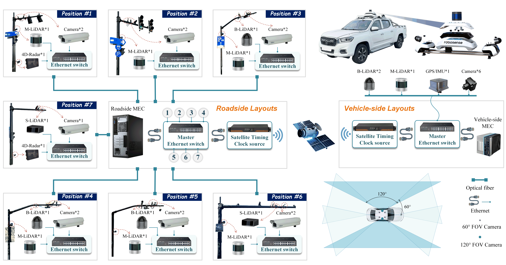
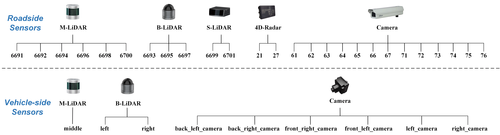
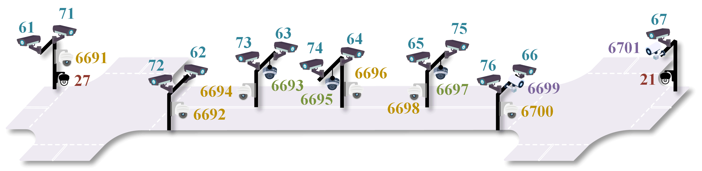
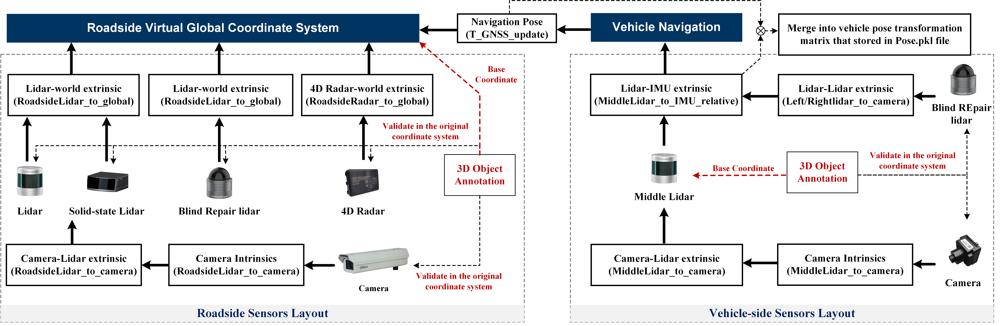

- Data simultaneously collected by 26 roadside sensors and 9 onboard sensors.
- The sequential data with different scenes of complex traffic condition, diverse weather are well-organized with specific scene-descriptive labels.
- 5 type sensors of mechanical LiDAR, Solid-state LiDAR, blind repair LiDAR, 4D Radar and Camera.
- Global sequential 3D bounding boxes and trajectories with unique tracking IDs for the same targets under the range of 500m
Sensor Layouts of V2XScenes

Detailed sensor layouts for both roadside and vehicle side view in V2XScenes.


Mounting position of the corresponding roadside sensors with specific index.
Calibration



The calibration relationships among the sensors in V2XScenes.
Illustrations of fused point cloud for both roadside and vehicle-side view. The gray points and blue points represent the roadside and vehicle-side LiDAR respectively. The red points are denoted as the roadside 4D Radar.
Multi-condition Scenarios in V2XScenes

 U-turns at intersection on a heavy rainy night
U-turns at intersection on a heavy rainy night
Facing congestion on an sunny day


 Facing occlusion on a cloudy rainy day
Facing occlusion on a cloudy rainy day
U-turns at intersection on a heavy rainy night


Cooperative 3D object detection benchmark
On the sequence of "Facing congestion on an sunny day"
| Method | AP@IoU=0.3 | AP@IoU=0.5 | AP@IoU=0.7 |
|---|---|---|---|
| Late Fusion | 84.52 | 71.79 | 42.50 |
| Early Fusion | 90.13 | 88.03 | 72.92 |
| AttuFuse | 88.56 | 81.99 | 64.74 |
| F-Cooper | 78.29 | 59.40 | 41.24 |
| V2XVIT | 89.90 | 88.05 | 81.30 |
| CoBEVT | 88.42 | 81.27 | 52.24 |
| Where2Comm | 88.18 | 72.38 | 40.35 |
Cooperative Tracking benchmark
On the sequence of "Facing congestion on an sunny day"
| Method | sMOTA ↑ | MOTA ↑ | MOTP ↑ | MT ↑ | ML ↓ | F1 ↑ | Prec. ↑ | Recall ↑ |
|---|---|---|---|---|---|---|---|---|
| Late Fusion | 0.6787 | 0.5599 | 0.6659 | 0.5417 | 0.0833 | 0.8919 | 0.9803 | 0.8181 |
| Early Fusion | 0.8671 | 0.6119 | 0.7792 | 0.6128 | 0.2553 | 0.9160 | 0.9894 | 0.8527 |
| AttuFuse | 0.7129 | 0.5881 | 0.7284 | 0.6383 | 0.0638 | 0.9025 | 0.9957 | 0.8252 |
| F-Cooper | 0.6538 | 0.5557 | 0.6577 | 0.7674 | 0.1852 | 0.9016 | 0.9654 | 0.8457 |
| V2XVIT | 0.7024 | 0.5970 | 0.7838 | 0.6170 | 0.0851 | 0.9094 | 0.9996 | 0.8341 |
| CoBEVT | 0.6983 | 0.5761 | 0.6348 | 0.5652 | 0.0000 | 0.9002 | 0.9903 | 0.8250 |
| Where2Comm | 0.7720 | 0.4632 | 0.6565 | 0.6739 | 0.0217 | 0.9144 | 0.9894 | 0.8490 |